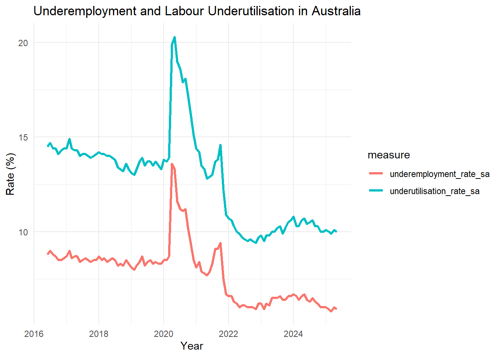
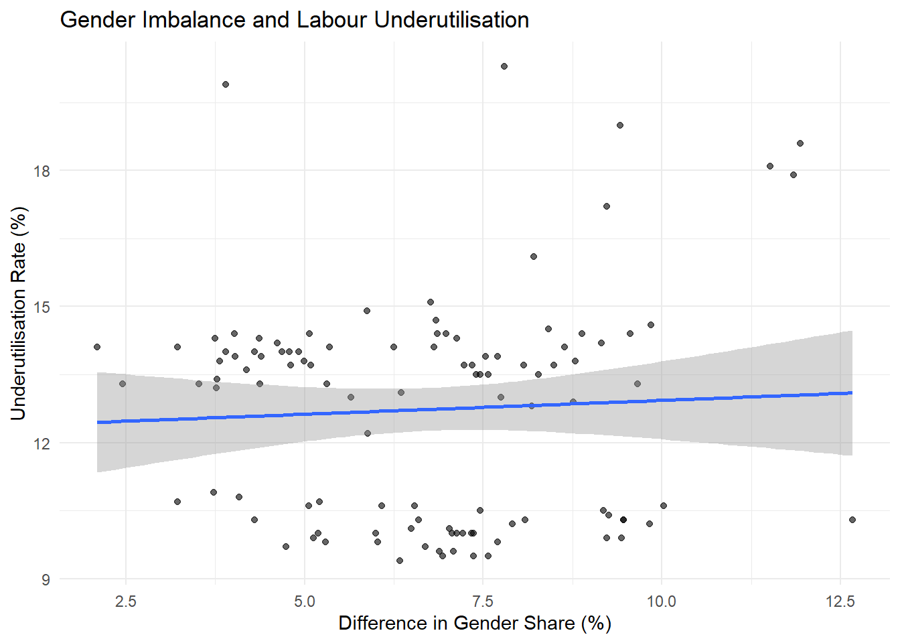

Does Gender Differences in Underemployment contribute to Underutilisation of Labour in Australia?
Assignment 4 | ETC5512 Wild-Caught Data
Data Overview
This blog investigates: Does gender difference in underemployment contribute to labour underutilisation in Australia? To answer this, three sub-questions guide the analysis:
- Is underemployment meaningfully linked to overall labour underutilisation in Australia between 2016 and 2025?
- Do males and females contribute differently to total underemployment over time?
- Is the gender gap in underemployment associated with changes in the labour underutilisation rate?
Why this question? Economic disruptions rarely affect all groups equally. Certain sectors absorb more shock than others, and because men and women are not distributed evenly across industries, labour market stress can fall differently across genders.This raises a genuine question: when underemployment surged in Australia, did one gender bear a disproportionate share of that burden — and did that imbalance drive overall labour underutilisation?
Source and Suitability
All data were obtained from the Australian Bureau of Statistics (ABS) Labour Force Survey — a monthly household survey of approximately 50,000 Australians conducted to measure employment and unemployment outcomes. As a large-scale probability sample survey, it is the most authoritative source of labour market data in Australia and is widely used by government, researchers, and policymakers. The survey directly measures underemployment, underutilisation, and unemployment, making it well suited to answering the research question.
Four datasets were used:
- Total underemployed workers (original series)
- Underemployed workers by sex (original series)
- Underemployment and underutilisation rates (trend and seasonally adjusted)
- Unemployment rates (trend and seasonally adjusted)
Data Type
This is sample survey data — not a census or experiment. The ABS Labour Force Survey uses a rotating sample design, meaning results are estimates with associated sampling error rather than exact population counts.
Data Licence
All ABS data are published under the Creative Commons Attribution 4.0 International licence (CC BY 4.0), permitting free use, sharing, and adaptation with attribution.
Data Limitations
- As sample-based estimates, all figures carry sampling error and should not be interpreted as exact counts.
- The ABS notes that the COVID-19 period (April 2020 – March 2022) caused significant volatility and trend breaks in the series, meaning comparisons across this period require caution.
- The gender breakdown is limited to male and female categories only, reflecting the binary classification used in ABS data collection during this period. Non-binary and gender-diverse individuals are not captured.
- Original series data were used for underemployment counts, which means seasonal effects are not removed and may influence month-to-month comparisons.
Ethical Considerations
The ABS Labour Force Survey is conducted under the Census and Statistics Act 1905, which legally protects the confidentiality of individual responses. Only aggregate, anonymised statistics are published — no individual-level data are used in this analysis.
No personally identifiable information is present in any dataset used, meaning there are no privacy risks associated with this analysis.
The binary gender classification in the data is a limitation worth acknowledging — findings described as “male” and “female” reflect ABS reporting categories and may not fully represent the diversity of gender identities in the Australian workforce.
Downloading the Data
All datasets were downloaded directly from the ABS Labour Force Survey publications. To reproduce this:
- Go to the ABS Labour Force Survey page: Labour Force Survey
- Navigate to the Data downloads section of the most recent release.
- Download the following Excel tables and export the relevant sheets as
.csvfiles:- Table 1 → Total underemployed workers (Original series) → saved as
Chart 1_ Underemployed workers, Original.csv - Table 5 → Underemployed workers by Sex (Original series) → saved as
Chart 5_ Underemployed workers, by Sex, Original.csv - Underemployment and underutilisation rates → saved as
Underemployment rate and underutilisation rate.csv - Unemployment rates → saved as
Unemployment rate.csv
- Table 1 → Total underemployed workers (Original series) → saved as
- Place all raw
.csvfiles into adata/folder within the project directory before running any code.
Processing Steps
Step 1 — Import
All four datasets were imported using read_csv() from the readr package. The total underemployment dataset required skip = 1 to bypass the title row. The remaining three datasets were read as single comma-separated text columns requiring further restructuring.
Step 2 — Restructuring
- The total underemployment dataset was renamed using
rename()to give variables shorter, interpretable names (hours_reduced,prefers_more,total_underemp). - The gender, underutilisation, and unemployment datasets each arrived as a single column of comma-separated text.
separate()fromtidyrwas used to split each into individual named variables.
Step 3 — Removing Duplicate Headers
The underutilisation and unemployment datasets contained a repeated header row after separation. This was removed using slice(-1). The gender dataset contained a row where month == "month" which was removed using filter().
Step 4 — Type Conversion
All labour market measure columns were converted from character (chr) to numeric (dbl) using as.numeric(). Rows that could not be converted became NA and were subsequently removed using filter(!is.na(month)).
Step 5 — Date Formatting
The month variable was converted from ABS format (e.g., Apr-16) to a proper R date object using my() from the lubridate package, applied consistently across all four datasets.
Step 6 — Duplicate Checks
count(month) followed by filter(n > 1) was run on each dataset to confirm no duplicated monthly observations existed before merging.
Step 7 — Merging
The four datasets were merged into a single working dataset (labour_data) using two successive left_join() operations on the month variable, anchored to the gender dataset. The final dataset was filtered to cover June 2016 to December 2025.
Step 8 — Derived Variables
The following variables were derived within labour_data using mutate():
| Variable | Formula |
|---|---|
Tot_male_underemp |
male_prefers_more_hours + male_hours_reduced |
Tot_female_underemp |
female_prefers_more_hours + female_hours_reduced |
total_underemp |
Tot_male_underemp + Tot_female_underemp |
male_share |
Tot_male_underemp / total_underemp × 100 |
female_share |
Tot_female_underemp / total_underemp × 100 |
share_gap |
male_share − female_share |
Remember
Kindly look into the ReadME file for change in approach.
Let us move Beyond Unemployment Rate!
The unemployment rate is often used to assess labour market performance, but it does not capture all forms of unused labour capacity. Many employed individuals would prefer to work additional hours, making underemployment an important component of labour underutilisation. This blog examines whether gender differences in underemployment contributed to labour underutilisation in Australia between 2016 and 2025 by analysing trends in underemployment, labour underutilisation, and the relative contributions of males and females to underemployed workers.
According to Australian Bureau of Statistics ABS labour underutilisation measures the extent to which available labour resources are not fully used in the economy. It combines unemployment and underemployment, providing a broader view of labour market spare capacity than unemployment alone. Underemployment refers to employed individuals who would like to work more hours and are available to do so, or full-time workers whose hours have been reduced for economic reasons.
Using ABS data from 2016 to 2025, this study examines whether differences in male and female contributions to underemployment are associated with changes in labour underutilisation over time.
Do Underemployment and Underutilisation make sense together?
Figure 1 shows that underemployment and labour underutilisation move almost hand in hand. When underemployment rises, underutilisation rises too, and when it falls, underutilisation follows. This suggests that underemployment is a key contributor to overall labour underutilisation in Australia.
The most noticeable spike occurs during COVID-19 in 2020, when both measures increased dramatically as many workers experienced reduced hours and labour market disruptions. While underutilisation remains consistently higher because it also includes unemployed workers, the similar patterns of the two lines indicate that underemployment plays a major role in explaining unused labour capacity. So are these two variables an item? YES!
If underemployment contributes so strongly to labour underutilisation, the next question is whether males and females contribute differently to underemployment and whether these differences matter for overall labour market outcomes.
Do Males and Females Contribute Differently to Underemployment?
At first glance, Figure Figure 2 may look a little uneventful—and that is exactly what makes it interesting. While overall underemployment rose and fell dramatically over the decade, the split between males and females barely changed.
Male workers consistently accounted for a slightly larger share of total underemployment, contributing around 52–54% of underemployed workers, while females accounted for approximately 46–48%. Even during the COVID-19 disruption, when underemployment surged across Australia, the gender balance remained remarkably stable.
This suggests that both males and females were affected by changing labour market conditions in broadly similar ways. Rather than one gender driving changes in underemployment, the evidence points to economy-wide factors affecting both groups simultaneously.
Most importantly, the difference between the two groups is relatively small compared with the large swings in overall underemployment observed in Figure 1. This hints that while gender differences certainly exist, they may not be the main reason labour underutilisation changes over time.
So, if males consistently contributed a slightly larger share of underemployment, the next question becomes: did this difference actually matter? To answer that, the next section examines whether the gender composition of underemployment was related to labour underutilisation using correlation and regression analysis.
What Story Does Correlation tells us?
Figure 3 puts the research question to the test by examining whether gender differences in underemployment are linked to labour underutilisation. Surprisingly, the answer appears to be “not really”.
The scatterplot shows no clear pattern, and the regression line is almost flat. While males consistently accounted for a slightly larger share of underemployment, these differences did not translate into meaningful changes in labour underutilisation. The regression results support this finding, with a non-significant p-value (0.58) and an R² of just 0.003.
In short, gender differences existed, but they were too small and too stable to explain fluctuations in labour underutilisation. Instead, broader economic events, particularly COVID-19, appear to have been the real drivers of changes in labour market spare capacity.

So, Does Gender Matter?
In conclusion, the question is if men and women are getting affected differently? Not as much as we might expect. Is it a good thing? As an economy, this gives clarity of the actual problem.
While males consistently accounted for a slightly larger share of underemployment, the difference barely changed over the decade and had little impact on labour underutilisation. Instead, the biggest swings in Australia’s labour market were driven by broader economic events, most notably the COVID-19 pandemic.
The real story is that underemployment itself remains a major source of unused labour capacity. In other words, Australia’s labour market challenge is less about who is underemployed and more about how many workers want more hours than they can get. The findings suggest that improving job quality and access to working hours may be more important than focusing on gender differences alone.
The Cherry On The Cake!
Do the current mechanism at place tell the whole labour market story? The ABS says not quite. The U-series framework has been introduced which will be fully implemented in 2027, looks beyond people without jobs and shines a spotlight on those who have work but not enough of it, along with others who are only loosely connected to the labour force.
By widening the lens, the U-series reveals that Australia’s spare labour capacity is much larger than unemployment figures alone suggest. In short, the labour market is not just about who has a job and who does not—it’s also about who wants more work, more hours, or a better opportunity than the one they currently have.
References
What’s in this section
Here is where you should tell us about your reflection on your analysis (Task 3).
Again, these are the details about your perspective and the gritty details behind the scenes of your analysis.